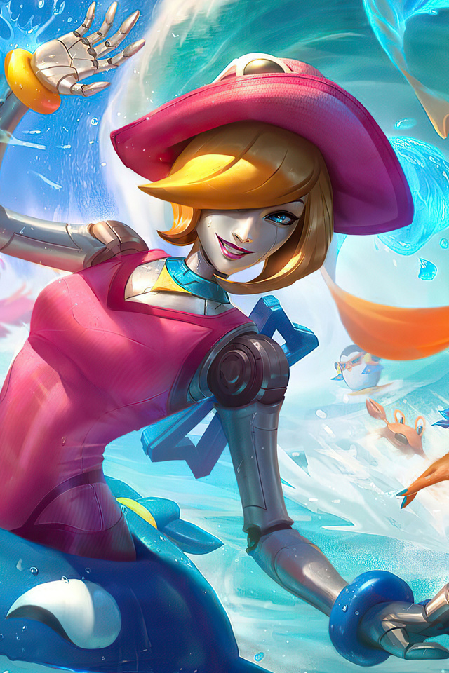
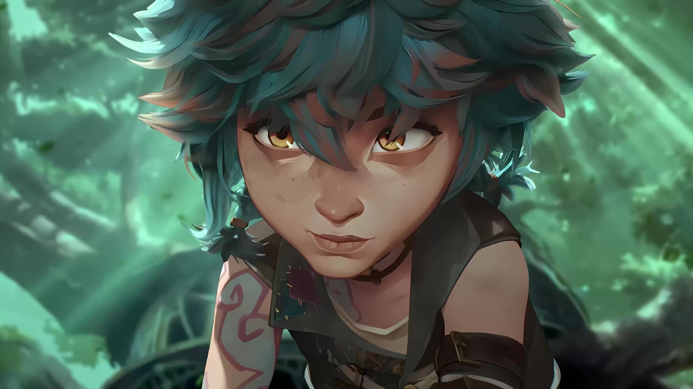
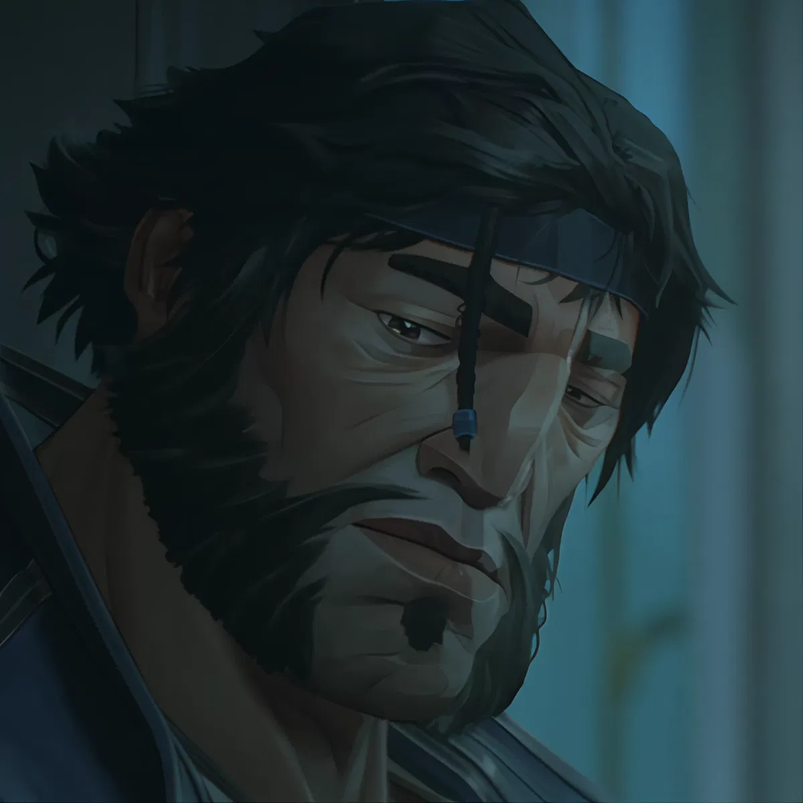

Welcome to My world of Arcane
Warwick
O resultado dos experimentos de Singed, ele é na verdade Vander, o pai adotivo de Vi e Jinx, transformado em uma fera. Sua humanidade está aprisionada sob a forma de um monstro bestial.
Orianna
Na série, ela é vista em flashbacks. Inicialmente, aparece como uma jovem bailarina de pele clara, olhos azuis e cabelo dourado. Mais tarde, após os experimentos de Singed, ela se transforma em uma golem mecânica. Sua pele e olhos se tornam prateados, e seu corpo é adornado com marcações douradas.
Isha
Uma criança com cabelo e olhos castanhos, que, em determinado momento, pinta o cabelo de azul. Ela se veste com roupas rabiscadas, e usa um chapéu de exploradora com óculos de proteção. Isha costuma ser vista com Jinx, e a semelhança entre elas é notável.
Loris
Um homem grande com pele bronzeada, cabelo escuro e uma barba com um toque grisalho. Ele usa um uniforme de vigilante de Piltover e possui uma pequena trança com uma miçanga azul. Loris lembra Vander em alguns aspectos e tem uma presença protetora.
Ambessa Medarda

Uma mulher imponente e forte, vestida com trajes de Noxus. Ela costuma usar uma armadura ou roupas elegantes, com detalhes que denotam seu status de guerreira. Sua expressão é geralmente severa e estratégica. Ela também usa uma máscara facial, que já aparece danificada na série.